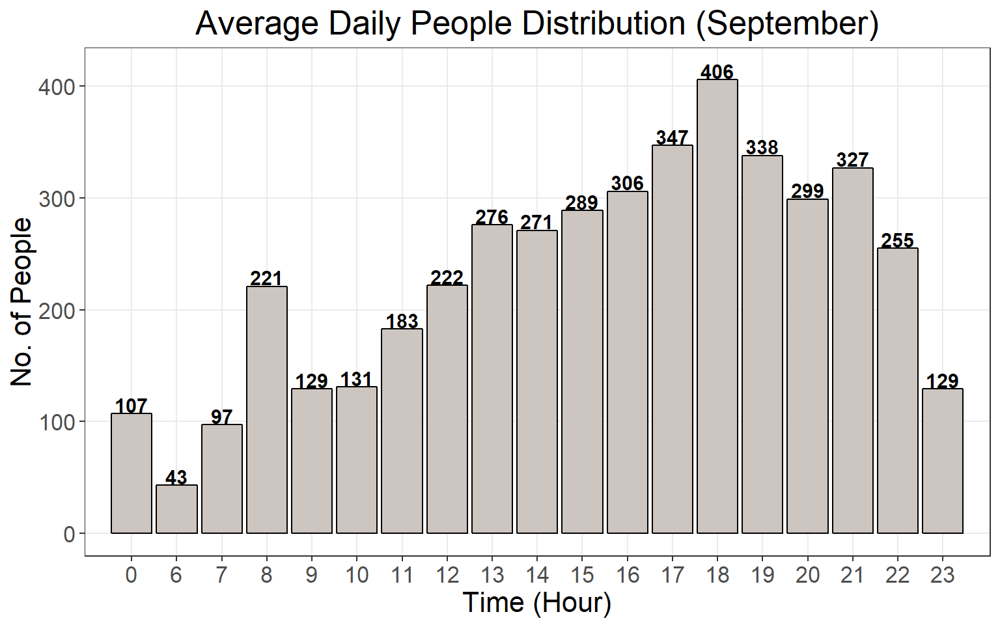

Bus Stop: People Trends
Foreword
This document is one of two parts (the other being the Temperature and PM data analysis). The R code referenced in this document is titled bus_stop_people_analysis.
1. Breaking down the data
For the rest of this document, I’ll be using the data collected from the bus stop camera in September.
Cracking open the data reveals an entire string of numbers. Let’s first organise them neatly into a compact data frame with the correct headers. In a brief explanation:
- DateTime - Date (YYYY-MM-DD) and Time (HR:MIN:SEC)
- ID - A unique number issued to each new person that enters the bus stop
- Waiting Time - The amount of time the unique person has stayed in the bus stop
- Total Number - The total number of people in the bus stop at the point of time
- Average - The average amount of time spent in the bus stop for any given person
colnames(fulldata) = c("DateTime", "ID", "Waiting Time", "Total Number", "Average")
t = 20 #t is the time buffer (20 seconds)
######################
fulldata = subset(fulldata, `Waiting Time`>t & `Waiting Time`<3600)
fulldata$Date = as.numeric(substr(fulldata$DateTime,9,10))
fulldata$Hour = as.numeric(substr(fulldata$DateTime,12,13))
days = length(table(fulldata$Date))We define a time buffer t = 20. This basically tells the code to remove all data entries of people that waited less than 20 seconds in the bus stop - as we can assume that these people we just walking through the bus stop and hence would not be waiting for a bus. We also extract out the date and hour of each entry, which would help us organise the data for presentation later.
Now if we take a small peek into a section of the data:
| DateTime | ID | Waiting Time | Total Number | Average | Date | Hour |
|---|---|---|---|---|---|---|
| 2018-09-01 00-00-09 | 25861 | 219 | 6 | 21 | 1 | 0 |
| 2018-09-01 00-00-09 | 25899 | 54 | 6 | 21 | 1 | 0 |
| 2018-09-01 00-00-09 | 25903 | 39 | 6 | 21 | 1 | 0 |
| 2018-09-01 00-00-10 | 25861 | 220 | 6 | 21 | 1 | 0 |
| 2018-09-01 00-00-10 | 25899 | 55 | 6 | 21 | 1 | 0 |
| 2018-09-01 00-00-10 | 25903 | 40 | 6 | 21 | 1 | 0 |
| 2018-09-01 00-00-11 | 25861 | 221 | 6 | 21 | 1 | 0 |
| 2018-09-01 00-00-11 | 25899 | 56 | 6 | 21 | 1 | 0 |
| 2018-09-01 00-00-11 | 25903 | 41 | 6 | 21 | 1 | 0 |
| 2018-09-01 00-00-12 | 25861 | 222 | 6 | 21 | 1 | 0 |
Notice that the data tracks every single unique ID every second. Let’s zoom into unique individual, 25861:
| DateTime | ID | Waiting Time | Total Number | Average | Date | Hour |
|---|---|---|---|---|---|---|
| 2018-09-01 00-00-09 | 25861 | 219 | 6 | 21 | 1 | 0 |
| 2018-09-01 00-00-10 | 25861 | 220 | 6 | 21 | 1 | 0 |
| 2018-09-01 00-00-11 | 25861 | 221 | 6 | 21 | 1 | 0 |
| 2018-09-01 00-00-12 | 25861 | 222 | 6 | 21 | 1 | 0 |
As we can see, the data tracks the individual every second, and produces their total waiting time. Once this individual leaves the bus stop, they are no longer tracked and the ID is no longer used. Every single day, the bus stop resets and the IDs being again, starting from ID number 0, 1, 2 and so on.
Now that we know how the bus stop tracks the data, let’s get to analysing it!
2. Reorganising around the shutdown-cycle
As the title suggests, we now need to re-arrange the data around the start-shutdown of the bus stop. Every day, the bus stop operates from 0600 - 0100 the next day, which means that the unique IDs generated everyday begin at 0600 and only reset after 0100 the day after. So why is this important?
Let’s take a look at the code:
y = fulldata[order(fulldata$ID),]
datet = split(y,y$Date) #split data according to date
imax = length(table(y$Date))
newlist = list()At the start, command split(y,y$Date) is segmenting the entire data set by date, which means that we’ve now separated the original data set into 30 different tables of data, corresponding to the days of the month (i.e. 1st Sept, 2nd Sept etc.).
However, we’re now faced with the issue highlighted before - a part of 2nd Sept (specifically, from 0000 - 0100 hrs) should actually “belong” to the data from 1st Sept (0600 - 2359) to form a complete start-shutdown operation cycle.
Hence in this section:
#Creates a new list that rearranges data around the shutdown cycle
for(i in 2:imax){
ii = i
ii2 = i-1
y1 = datet[[ii]]
y2 = subset(y1, `Hour` < 1)
y1 = subset(y1, `Hour` > 2)
y3 = datet[[ii2]]
y1 = rbind(y3,y2)
y1 = y1[order(y1$ID,-y1$`Waiting Time`),]
y1 = subset(y1, `Hour` != 1)
newlist = list.append(newlist,y1)
} #rearranges data to shift 12am and 1am people to the day before
#Add the last day into the list
ylast = datet[[imax]]
ylast = subset(ylast, `Hour` >2)
ylast = ylast[order(ylast$ID,-ylast$`Waiting Time`),]
ylast = subset(ylast, `Hour` !=1)
newlist = list.append(newlist,ylast)We create a for loop to retrieve data from the second day, and put them back into the original day, repeating this from the first to the last day of the month. This way, when we need to calculate the daily averages of people or waiting time, we are now able to do so accurately based on the daily start-shutdown cycle of the bus stop.
An extremely crucial step happens here: in the command y1[order(y1$ID,-y1$Waiting Time),], we basically tell the code to examine every single unique ID, and rearrange the data in descending order of waiting time, for each unique ID. This becomes relevant later, so hang on to this thought.
We’ve now prepared our data set for analysis.
3. Calculating Average, Maximum Time, and Number of People
Now we need to find a way to retrieve only the relevant data. Recall earlier that the data set contains unique IDs that display every second that the person stays in the bus stop, and only stops once the person leaves.
Hence, the only relevant data to us is the final entry of every unique ID, that is to say we are only concerned with how long a person had to wait just before they left, in order to determine the actual waiting time of all the people at the bus stop.
days = imax
z = list()
p = 0
a3 = data.frame()
sumlist = list()
tlist = data.frame()
maxlist = data.frame()
for(i in 1:days){
a1 = newlist[[i]]
a11 = distinct(a1, `ID`, `Hour`)
a4 = distinct(a1, `ID`, `Hour`, .keep_all = TRUE)
maxt = aggregate(`Waiting Time`~Hour,data=a4,max)
t1 = aggregate(`Waiting Time`~ Hour, data=a4,sum)
tlist = rbind(tlist,t1)
maxlist = rbind(maxlist,maxt)
sumlist = list.append(sumlist,a4)
a2 = table(a11$Hour)
p1 = sum(a2)
a2 = data.frame(a2)
a2$Day = as.factor(i)
a3 = rbind(a3,a2)
p = p + p1 #sum people up (includes double counting across hour, usually <5%)
}In this section, we then create another for loop that extracts out all the relevant data for every day of the start-shutdown cycle list that we created earlier. We make use of a very powerful function available in R, called distinct, that as the name suggests, looks for the first new, distinct entry of whatever is specified and keeps it, and thereafter removes everything else.
Remember how we arranged the data in descending order of waiting time earlier? It comes together here in this line, a11 = distinct(a1, ID, Hour), where the distinct function goes down the data list and keeps the first entry of each unique ID, which now corresponds to their final waiting time.
| DateTime | ID | Waiting Time | Total Number | Average | Date | Hour |
|---|---|---|---|---|---|---|
| 2018-09-30 06-13-31 | 1 | 811 | 2 | 20 | 30 | 6 |
| 2018-09-30 06-00-35 | 2 | 21 | 2 | 13 | 30 | 6 |
| 2018-09-30 06-03-08 | 12 | 21 | 2 | 13 | 30 | 6 |
| 2018-09-30 06-04-19 | 16 | 36 | 2 | 13 | 30 | 6 |
| 2018-09-30 06-05-04 | 18 | 42 | 2 | 20 | 30 | 6 |
| 2018-09-30 06-11-03 | 29 | 81 | 2 | 20 | 30 | 6 |
| 2018-09-30 06-17-39 | 35 | 252 | 2 | 20 | 30 | 6 |
| 2018-09-30 06-19-12 | 40 | 101 | 3 | 18 | 30 | 6 |
| 2018-09-30 06-19-32 | 45 | 28 | 2 | 20 | 30 | 6 |
| 2018-09-30 06-24-57 | 46 | 348 | 2 | 17 | 30 | 6 |
Great! Now we have an entire table of every person’s final waiting time, and its split up by day. Let’s begin examining every factor.
4. Average Number of People
Briging our attention back to Fig 3.1, there’s already a bunch of lines snuck in there to actually perform the counting of the total number of people in each day, by hour. It’s specifically these lines:
a2 = table(a11$Hour)
p1 = sum(a2)
a2 = data.frame(a2)
a2$Day = as.factor(i)
a3 = rbind(a3,a2)
p = p + p1Essentially, we count the total number of unique IDs in each hour of a start-shutdown day. Now, to find an average daily number of people in the month of September, we sum up all the people at the bus stop by hour, and divide the total by the number of days to get an average. The final code, and graph looks a little like this:
a3$Var1 = as.numeric(as.character(a3$Var1))
a3 = a3[order(a3$Var1),]
sumbyhour = aggregate(Freq~Var1, data = a3, sum)
sumbyhour$Freq = ceiling(sumbyhour$Freq/days)
#Creates barplots for the data, change labels (in green) to change graph titles and x/y axis labels
time_length = c(1:length(sumbyhour$Var1))
g1 = ggplot(data = sumbyhour, aes(x = time_length, y= Freq)) + geom_bar(fill = "seashell3", stat = "identity", col = "black") +
labs(title = sprintf("Average Daily People Distribution (%s)",mm), x = "Time (Hour)", y = "No. of People") +
geom_text(data = sumbyhour, aes(label=Freq, y = Freq + 8),
size=4, position=position_dodge(width=0.4), fontface = "bold", colour = "black") +
scale_x_discrete(limits = as.character(sumbyhour$Var1)) +
theme_bw()+theme(panel.grid.minor = element_blank(),plot.title = element_text(hjust = 0.5),
text = element_text(size=16))
Fig 4.2 - Average number of people (September)5. Average and Maximum Waiting Time
To find the average waiting time of any given person in the bus stop by hour, we perform similar calculations to that above. We sum up all the waiting time of every single person, and divide by the total number of people in the month of September. Thereafter, we display this data on an hour on hour basis, as such:
tlist = tlist[order(tlist$`Hour`),]
timebyhour = aggregate(`Waiting Time`~Hour, data = tlist, sum)
tt = timebyhour
timebyhour$`Waiting Time` = ceiling(timebyhour$`Waiting Time`/days)
#Average maximum waiting time by hour
maxlist = maxlist[order(maxlist$`Waiting Time`),]
maxbyhour = aggregate(`Waiting Time`~Hour, data = maxlist, sum)
maxbyhour$`Waiting Time` = ceiling(maxbyhour$`Waiting Time`/days)
timebyhour$`Waiting Time` = ceiling(timebyhour$`Waiting Time`/sumbyhour$Freq)
time_length = c(1:length(sumbyhour$Var1))
g2 = ggplot(data = timebyhour, aes(x = time_length, y= `Waiting Time`)) + geom_bar(fill = "darkslategray3", stat = "identity", col = "black") +
labs(title = sprintf("Average Waiting Time Distribution (%s)",mm), x = "Time (Hour)", y = "Time (s)") +
geom_text(data = timebyhour, aes(label=`Waiting Time`, y = `Waiting Time` + 4),
size=4, position=position_dodge(width=0.4), fontface = "bold", colour = "black") +
scale_x_discrete(limits = as.character(timebyhour$Hour)) +
theme_bw()+theme(panel.grid.minor = element_blank(), plot.title = element_text(hjust = 0.5),
text = element_text(size=16))
g3 = ggplot(data = maxbyhour, aes(x = time_length, y= `Waiting Time`)) + geom_bar(fill = "lightsteelblue", stat = "identity", col = "black") +
labs(title = sprintf("Maximum Average Waiting Time Distribution (%s)",mm), x = "Time (Hour)", y = "Time (s)") +
geom_text(data = maxbyhour, aes(label=`Waiting Time`, y = `Waiting Time` + 30),
size=4, position=position_dodge(width=0.4), fontface = "bold", colour = "black") +
scale_x_discrete(limits = as.character(timebyhour$Hour)) +
theme_bw()+theme(panel.grid.minor = element_blank(), plot.title = element_text(hjust = 0.5),
text = element_text(size=16))And likewise, for the maximum average waiting time, we first find out what was the longest waiting time at every hour of the day, then find the average of these maximum waiting times over the whole month:
6. Heatmap of People
In this final section, we take a deeper look at the distribution of the number of people at the bus stop, using a graphical method known as a heatmap. It’s a very useful way to observe large data trends at a glance, and more information can be found here.
To do this, we pull out data of the total number of people each day created earlier, and simply plot them on a heatmap, which shows us the breakdown of people by day and hour.
heatmap_average = as.data.frame(a3)
heatmap_average$Var1[heatmap_average$Var1==0] = 24
hour_list = sumbyhour$Var1
hour_list[1] = 24
hour_list = hour_list[order(hour_list)]
g4 = ggplot(heatmap_average, aes(Var1,Day))+geom_tile(aes(fill = Freq), colour = "white")+
scale_fill_gradient(low = "yellow1", high = "firebrick")
g4 = g4 + labs(x = "Hour", y = "Day", fill = "Number of People") +
scale_x_discrete(limits = hour_list) +
ggtitle("Average Number of People at Bus Stop") +
theme(plot.title = element_text(hjust = 0.5),
axis.text.x = element_text(face = "bold"),
axis.text.y = element_text(face = "bold"),
text = element_text(size=16))For example, here we can immediately deduce that:
- Weekdays must be 3rd - 7th, 10 - 14th Sept etc., because of the increased traffic people in the morning hours (or people going to work)
- By contrast that 8th and 9th, or 15th and 16th must be weekends with a massive increase in traffic in the early evening hours (or people going out)
- We can also see that at most times the bus stop is crowded (>300 people) only for a few hours a day, and at the rest of the time its mostly sparce
Results like this can have implications on how to design the start-shutdown cycle of the bus stop, in order to save energy on air cooling for the bus stop.
7. Conclusions
As already touched upon above, concise and clear data representation allows us to make better judgements of how to move forward with the bus stop. Do check out the other bus stop temperature and PM documentation to also see how the temperature and PM data of the bus stop is retrieved.
I hope this documentation helps with troubleshooting or understanding the underlying basis of the code, and future data analysis of the bus stop can be built upon this work.